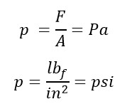
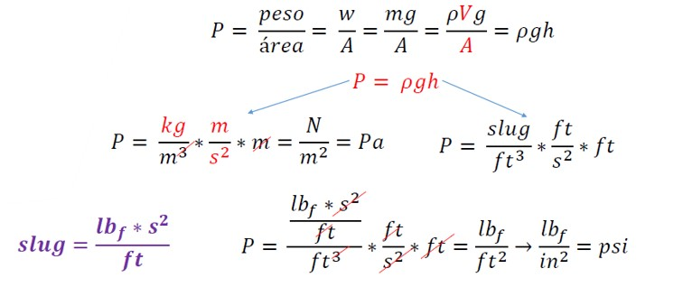
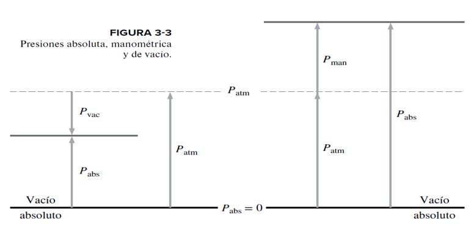

Presión
La presión se define como una fuerza normal ejercida por un fluido por unidad de área.
Esto se puede establecer mediante la ecuación
Se habla de presión sólo cuando se trata de un gas o un líquido. Puesto que la presión se define como fuerza por unidad de área, tiene la unidad de newton por metro cuadrado (N/m2), la cual se llama pascal (Pa); es decir, 1 Pa = 1 N/m2.
La presión de un fluido estático no depende de la forma de la masa total o del área de la superficie
𝑃𝑎𝑡𝑚 = 1 𝑎𝑡𝑚 = 14,7 𝑝𝑠𝑖 = 101,3 𝑘𝑃𝑎

Nota: adaptado de mecánica de fluidos, facultad de ciencias naturales e ingeniería, unidades tecnológicas de Santander Barrancabermeja (2021. pág. 20) por MSc. Leidys Marleyn Rodríguez Castro
La presión real que se encuentra en una posición dada se llama presión absoluta, y se mide en relación con el vacío absoluto (es decir, presión cero absoluto). La mayoría de los instrumentos para medir la presión se calibran para que den una lectura de cero en la atmósfera, de modo que indican la diferencia entre la presión absoluta y la presión atmosférica local. Esta diferencia se llama presión manométrica (presión relativa). La Pman puede ser positiva o negativa, pero las presiones por abajo de la atmosférica se conocen como presiones de vacío y se miden con instrumentos de vacío que indican la diferencia entre la presión atmosférica y la absoluta. Las presiones manométrica, absoluta y de vacío están interrelacionadas por:
Pman = Pabs – Patm
PVac = Patm - Pabs
Este concepto se ilustra en la figura 3-3.

Nota: Mecánica de Fluidos Fundamentos y Aplicaciones. 4 ed. (2018. pág. 79). Por Cengel, Y. & Cimbala. J
Cengel, Y. & Cimbala. J. (2018). Mecánica de Fluidos Fundamentos y Aplicaciones. (4 ed.), pág. 78. México: McGraw-Hill Education Global Holdings LLC.
Mott, R.L. & Untener J.A. (2015). Mecánica de Fluidos. 7 ed., pág. 8. México: Pearson Educación de México, S.A. de C.V.